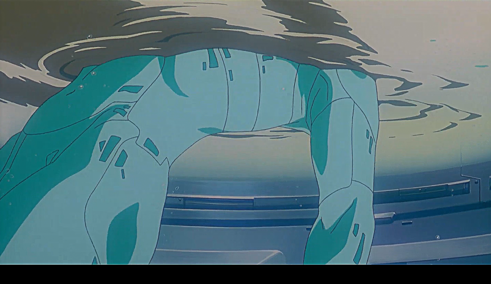

After watching Ghost in the Shell, I found myself drawn into the intimacy between life and machine. I was then inspired to explore what datamoshing could offer in editing by corrupting the actual files hexcode to see what the machine itself would construct. I wasn’t simply altering images; I was witnessing something emerge, as if the machine itself was dreaming.